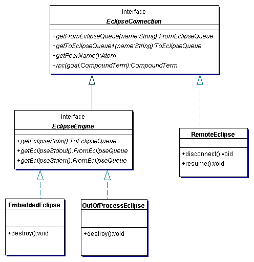

To allow ECLiPSe code to be independent of the way it is interfacing with Java, there is a unified technique in ECLiPSe for interfacing to Java and other non-ECLiPSe programs, based on the concept of a peer. A peer is a computation environment which is external to ECLiPSe, either in the sense of being a different computer language or being a different process, possibly on a different machine. When ECLiPSe is communicating with one or more Java virtual machines using the Java-ECLiPSe interface (including cases where ECLiPSe is embedded), it stores some global information to keep track of each peer.
Each peer of the ECLiPSe engine is indexed within ECLiPSe by a unique peer name which is an atom. This is set during the initialisation of the connection between ECLiPSe and Java; the details vary according to the Java class used to make the connection.
The peer name is used in those ECLiPSe predicate calls related to the peer connection. In particular, those related to the opening and closing of peer queues (see Section 8.5.1). The EclipseConnection interface includes the method getPeerName() which can be used to retrieve this name on the Java side.
There are at present two options for creating an ECLiPSe engine from Java. With EmbeddedEclipse, the engine takes the form of a dynamically loaded shared library within the Java virtual machine. With OutOfProcessEclipse it is a separate, child process of the Java virtual machine. These two options have in common that they are both initialised using an EclipseEngineOptions object and that both classes implement EclipseEngine .
The options can be specified by either looking them up in a java.util.Properties instance or by calling ``set'' methods on the EclipseEngineOptions instance.
In the first case you can either specify system properties (by passing -D command line options to the JVM) or you can use an EclipseEngineOptions constructor which takes a Properties parameter. Each option has a standard property name detailed below.
Once the EclipseEngineOptions object is created, there are also ``set'' methods we can invoke on it to set the different options.
This section discusses issues specific to using the EmbeddedEclipse class. With EmbeddedEclipse, the ECLiPSe engine is a dynamically loaded native library in the Java virtual machine. Figure 8.1 shows this deployment model in UML notation. The important consequences of this deployment model are:
The embedded ECLiPSe which runs within the JVM and shares its resources, can be started and ended only once during the lifetime of the JVM. There is no public constructor method for EmbeddedEclipse. Initialisation of the embedded ECLiPSe is done using the static getInstance method of class EmbeddedEclipse which takes an EclipseEngineOptions instance as a parameter. The method uses this to configure and set up ECLiPSe and then returns an object of type EmbeddedEclipse. There may only ever be one instance of EmbeddedEclipse in a JVM. If the embedded ECLiPSe has already been set up or if it has been set up and terminated, subsequent invocations of getEclipse with an EclipseEngineOptions will throw exceptions. However during the lifetime of the embedded ECLiPSe, a reference to the unique EmbeddedEclipse object can be obtained using the parameterless static getEclipse method.
The destroy method which appears in the EmbeddedEclipse class will shut the embedded ECLiPSe down. Once the destroy method has been invoked, the invocation of any methods which require use of the ECLiPSe engine will result in an EclipseTerminatedException being thrown. The destroy method should free all the resources of the JVM process which were being used by the embedded ECLiPSe.
Once the EmbeddedEclipse has been destroyed, getEclipse can no longer be used during the lifetime of the JVM to initialise an embedded ECLiPSe engine. In other words, by invoking destroy, one removes the ability to use embedded ECLiPSe engines within the current instance of the JVM.
This section discusses issues specific to the OutOfProcessEclipse class. With OutOfProcessEclipse, the ECLiPSe engine is a child process of the Java virtual machine. Figure 8.2 shows this deployment model in UML notation. The important consequences of this deployment model are:
OutOfProcessEclipse has a single constructor which takes an EclipseEngineOptions object as its only parameter. See Section 8.6.2 for details of how to create and configure this object. Unlike EmbeddedEclipse, multiple OutOfProcessEclipse instances are allowed.
We invoke the instance method destroy() in OutOfProcessEclipse to terminate both the child ECLiPSe process and our association with it. Once the destroy method has been invoked, the invocation of any methods on the destroyed OutOfProcessEclipse object which require use of the ECLiPSe engine will throw an EclipseTerminatedException. Unlike EmbeddedEclipse, invoking destroy() on an OutOfProcessEclipse does not affect our ability to create new OutOfProcessEclipse instances during the lifetime of the Java virtual machine.
If the child process ECLiPSe crashes or is killed while ECLiPSe has control, the Java thread which handed control to ECLiPSe should throw an EclipseTerminatedException. If this happens while Java has control, usually the next invocation of a method on the OutOfProcesEclipse should throw an EclipseTerminatedException, although it is possible that some operations will throw a different class of IOException. If this should happen it is worth calling the destroy method to do a final clean-up.
In some applications, for example where Java is used to visualise search in ECLiPSe, the life of the ECLiPSe engine may begin before the connection with Java is initialised or end after the connection with Java is terminated. Furthermore, it may also be useful for the eclipse engine and the Java virtual machine to be running on physically separate computers, for example if the ECLiPSe tasks are being executed on a compute server, but the Java program is to be run on a workstation. The RemoteEclipse class can be used to connect Java to ECLiPSe in these two scenarios. The deployment model is that the RemoteEclipse Java object is a ``Proxy'' for the ECLiPSe engine which is running on the remote machine, as shown in UML notation in Figure 8.3.
The key consequences of this deployment model are:
Connecting Java to ECLiPSe using RemoteEclipse requires the ECLiPSe engine to be primed so that it is ready to accept the connection. By the time it connects, the Java program must have the IP address of the machine hosting the ECLiPSe engine (the server) and the port number being used for the connection. The attachment protocol also optionally allows for a password to be used by the Java side and checked against one specified on the ECLiPSe side. Also the server must be configured to allow TCP/IP socket servers which can be connected to by the machine hosting Java. Initialising a connection using RemoteEclipse therefore requires some coordination between the ECLiPSe code and the Java code. The Java code always consists of a single RemoteEclipse constructor invocation, although the constructor parameters may vary.
The ECLiPSe side of the code uses certain builtins. Refer to the relevant documentation of these for precise details of usage. On the ECLiPSe side, the code can be structured in two different ways; one simpler and the other allowing more flexibility. We outline here the sequence of actions in each case.
If left as a free variable, the Host argument of either the remote_connect/3 or remote_connect_setup/3 goal will become instantiated to the IP address of the machine hosting ECLiPSe. Another possibility is to call the goal with this argument already instantiated to the atom localhost. This will mean that only client connections made by processes on the same machine and using the loopback address will be accepted. With this usage, on the Java side you should use invoke InetAddress.getHostByName("localhost"). Note that InetAddress.getLocalHost() will not work in this situation.
In both connection sequences, the peer name indexing the connection is either specified or generated dynamically on the ECLiPSe side in the remote_connect/3 or remote_connect_setup/3 goal.
Once the connection has been established by one of the above sequences, control initially rests with the Java side. Therefore the ECLiPSe code which called the remote_connect/3 goal or the remote_connect_accept/6 goal blocks until the Java side explicitly transfers control to ECLiPSe or disconnects.
As mentioned above, after the initial connection has been established, Java has control by default. However, this may not be convenient. For example, in the case of search visualisation, after the initialisation of the visualisation client, we may prefer ECLiPSe to have control by default, allowing control to pass to Java only on certain occasions. Control can be explicitly passed from Java to ECLiPSe by invoking the resume() method on a RemoteEclipse. In this case the ECLiPSe code will resume execution after the last point where it passed control to Java. For example, if resume() is invoked immediately after the RemoteEclipse constructor completes, ECLiPSe execution will resume at the point just after the call to the remote_connect/3 goal or the remote_connect_accept/6 goal.
Control can be transferred to a Java peer using the remote_yield/1 builtin. In this case the Java thread which passed execution to ECLiPSe will resume execution at the point where it blocked.
The resume() method and the remote_yield/1 builtin should be used with care. An invocation of resume() should be paired with an execution of a remote_yield/1 goal in most cases. In addition, remote_yield/1 should not be executed in any code executed as a result of an rpc invocation and resume() should not be executed within the QueueListener methods dataAvailable() or dataRequest().
The resume() method and the remote_yield/1 builtin should only be used when other techniques such as rpc are not suitable.
A RemoteEclipse connection between ECLiPSe and Java may be terminated in different ways. Firstly, disconnection may be initiated by either side. Secondly the disconnection may be either multilateral or unilateral. Multilateral disconnection, the preferred method, is where the side which has control initiates disconnection. Unilateral disconnection is where the side which initiates disconnection does not have control, and should only take place as a clean-up routine when one side is forced to terminate the connection because of an unexpected event.
All three classes implement EclipseConnection , which provides all the functionality you would expect during a ``session'' with ECLiPSe. The EclipseEngine interface is implemented when the JVM ``owns'' the ECLiPSe engine, and so provides the methods to access the standard I/O streams. Note that the termination methods are not in either of the interfaces, but are specific to each class. Furthermore, the resume() method allows RemoteEclipse to explicitly hand control to ECLiPSe, but this operation is not supported by the other two classes.
To summarise the advantages and disadvantages Table 8.2 gives an at-a-glance comparison of the different features of the different connection classes.
|
 |